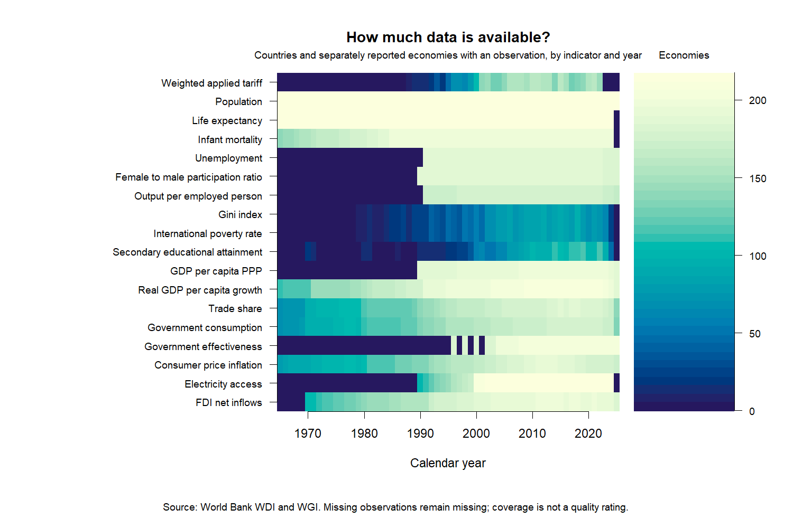
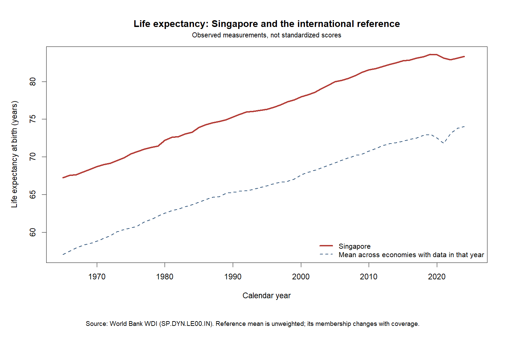
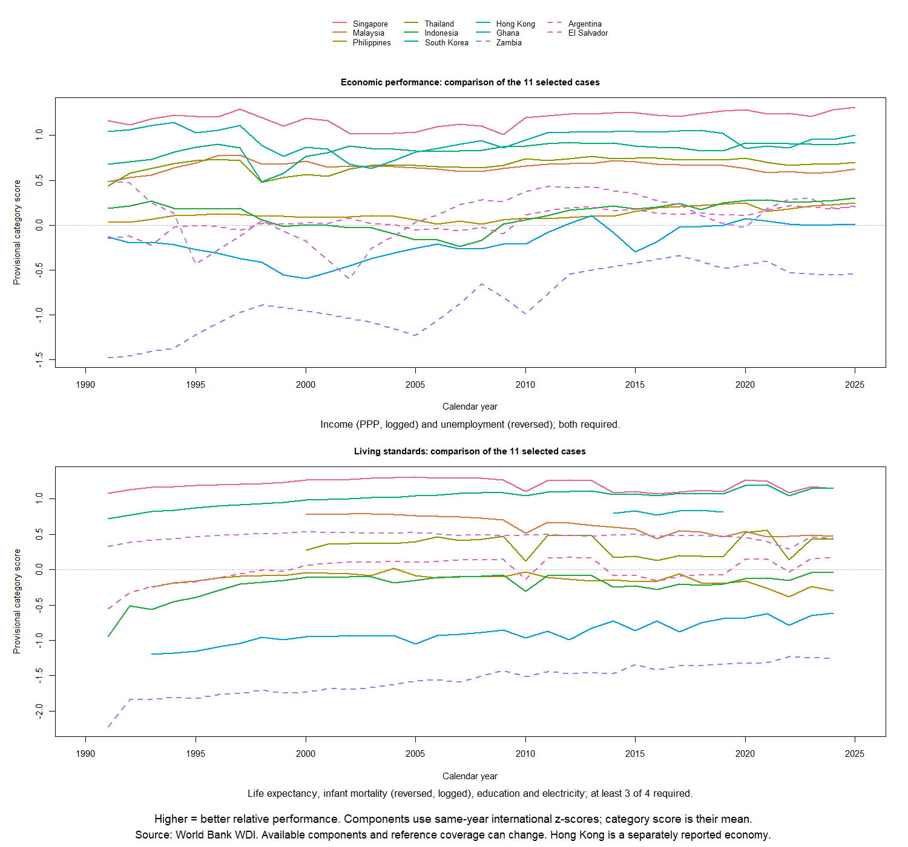
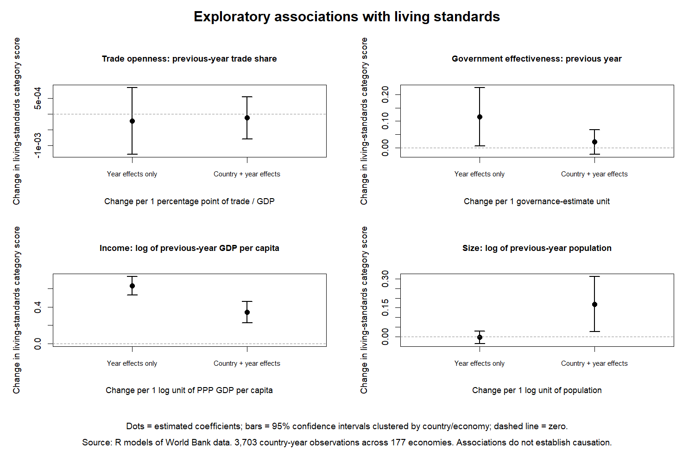

Latest research: Ownership/direct control and more comparable social measures.
Latest update: State-intervention measures and social-outcome survey audit: new data, charts and models.
This exploratory R project compares development outcomes using real World Bank data. Start with the charts below, then open the labeled CSV files.
How to read the scores: Higher means better relative performance. Zero is the mean of the components standardized against each year's available international reference. Category scores are averages of component z-scores, not standardized category distributions. These provisional scores do not prove policy effects.
The expanded analysis adds democracy, a descriptive freedom basket and multi-year happiness scores. Social composites and state intervention remain unresolved. Open the latest research update below.
Open the current five-area overview, new sources and expanded analysis.




Blank cells mean unavailable values, never zero. Each CSV has descriptive column headings. Keep source codes for traceability.
| File | Rows | What it contains |
|---|---|---|
| category_scores.csv | 26,474 | Two provisional category scores. Zero is the mean of the reference-standardized components; positive is better. See basket and coverage columns. |
| country_year_panel.csv | 13,237 | One row per country/economy and year, with a separate labeled column for each observed indicator. |
| expanded_analysis_panel.csv | 13,237 | Annual outcomes, original indicators and fixed-basket living-standard sensitivity used in the expanded models. |
| expanded_country_year_panel.csv | 13,237 | World Bank country-year panel joined to reviewed V-Dem identifiers. Happiness is deliberately excluded because its observations cover multiple years. |
| fixed_baseline_sensitivity.csv | 230,618 | Compares annual relative scores with scores anchored to the 2010 mean and standard deviation. Observation count refers to the 2010 indicator reference. |
| freedom_category_scores.csv | 4,513 | Descriptive freedom basket: civil liberties, expression and association. All three are required. It shares ingredients with democracy and cannot independently test democracy effects. |
| happiness_nonoverlapping_model_panel.csv | 586 | Non-overlapping happiness reporting windows. Predictors precede the full window, not just its ending year. |
| happiness_period_scores.csv | 2,089 | Observed 0-10 life-evaluation averages for explicitly labeled multi-year periods. Rank is separate. Early period start is left unassigned. |
| historical_income_classifications.csv | 8,463 | Official income group in force on July 1 of each observation year. Fiscal year and underlying GNI data year are separate. Starred retrospective classifications are excluded. |
| hong_kong_census_gini.csv | 6 | Six verified census Gini values for two household populations and 2011/2016/2021. Printed page 98, PDF page 110; separate local case study. |
| imf_public_investment.csv | 10,560 | Original IMF fields plus general-government investment / same-source nominal GDP. May 2021 vintage ends in 2019. Narrow fiscal measure, not total intervention. |
| international_long.csv | 230,618 | One row per country/economy, year and indicator. Values retain original units; blank means missing. |
| living_model_sample.csv | 3,703 | Complete observations actually used in living-standard models. Predictors refer to exactly the preceding calendar year. |
| oecd_public_ownership_assessments.csv | 108 | Periodic ownership-regulation scores with actual legal-reference dates. Wave names are not assumed to be the observation year. No annual filling. |
| ownership_outcome_analysis_panel.csv | 5,425 | Annual growth, living and gender outcomes with exact preceding-year ownership and other predictors. SWIID outcomes are excluded from regression. |
| ownership_survey_analysis_panel.csv | 1,916 | Observed national PIP survey outcomes with preceding-year ownership, separate welfare types and comparable-spell metadata. |
| pip_national_social_outcomes.csv | 2,461 | Strictly nationally labeled survey records, without interpolation. Income and consumption remain distinct. |
| pip_survey_social_outcomes.csv | 2,570 | Pinned PIP survey records with welfare concept, geography, comparability spell and unit conversions. Includes non-national records for inspection. |
| primary_cases_long.csv | 11,704 | Same observed data restricted to the 11 selected cases. Hong Kong is a separately reported economy. |
| public_investment_analysis_panel.csv | 13,237 | Annual outcomes with exact preceding-year public investment and institutional predictors. Investment vintage ends in 2019. |
| singapore_gini_definitions.csv | 255 | Official Singapore Gini definitions, populations, equivalence scales and tax treatments. A separate local case study, never spliced into PIP. |
| social_survey_analysis_panel.csv | 2,461 | Observed national surveys joined to preceding-year predictors, with comparable-spell identifiers retained. Gaps are not filled. |
| standardized_indicators.csv | 230,618 | Raw values plus transformed values, annual z-scores and percentiles. At least 100 valid reference economies are required for scoring. |
| state_ownership_control.csv | 10,008 | Expert-assessed ownership/direct control, original V-Dem values, reversed 0-4 expected scale and uncertainty. Not an asset percentage or a welfare score. |
| swiid_standardized_income_inequality.csv | 6,415 | Published SWIID standardized/model-based disposable and market income estimates. Provider uncertainty retained; not direct survey data or regression-ready validated draws. |
| undp_gender_inequality.csv | 6,630 | Same-vintage UNDP Gender Inequality Index, 1990-2023. Lower raw values mean less inequality; higher relative z means less relative disadvantage. Hong Kong remains missing. |
| vdem_country_year.csv | 10,008 | Audited V-Dem v16 country-year indices, original IDs and uncertainty. Historical raw values are retained; modern benchmarking begins in 2000. |
| vdem_indicators_and_scores.csv | 50,040 | V-Dem raw values and annual scores using at least 100 matched reference economies. Provider bounds are not labeled as 95 percent intervals. |
| additional_source_coverage.csv | 144 | Coverage by V-Dem index/year and happiness reporting period. Observed counts refer to matched economies, not individual survey respondents. |
| balanced_reference_2000_2024.csv | 450 | Same economies with observed values in all 25 years for each indicator. Balanced selection can exclude data-poor economies and is not a representative global sample. |
| better_measure_source_decisions.csv | 6 | Accepted, limited and unavailable candidate sources, including dependent sources and the failed WIID public download. |
| calendar_year_case_comparisons.csv | 55 | Observed values for selected cases in 1990, 2000, 2010, 2020 and 2024. A missing requested year remains blank. |
| case_missingness.csv | 198 | Missing share over all requested years 1965-2025 for each selected case and indicator. |
| collection_failures.csv | 0 | Any failed collection requests in the latest pipeline run; a header-only file means no failures. |
| correlation_sample_sizes.csv | 5 | Number of jointly observed country-year pairs behind each correlation. |
| correlations.csv | 5 | Pairwise correlations from country-year observations since 2000. Diagonal equals 1. This is association, not causation. |
| coverage_by_year.csv | 1,064 | Coverage counts by indicator and year. Missing share uses the full reference catalog as denominator. |
| current_high_income_reference.csv | 1,064 | Raw annual means for economies classified as high income today. This is not historical high-income membership. Observation count is economies. |
| development_stage_comparison.csv | 11 | Exploratory stage alignment to Singapore 2000 PPP income, requiring a sustained three-year threshold and at most 10 percent initial overshoot. Earliest-observation matches are left-censored. |
| expanded_model_coefficients.csv | 90 | Expanded model estimates and country-clustered 95 percent confidence intervals. Outcome units differ, so coefficients across outcomes are not directly comparable. |
| expanded_model_diagnostics.csv | 19 | Sample size, time window and basic model diagnostics. All models remain exploratory associations. |
| expanded_model_samples.csv | 55,367 | Country/economy, outcome year and predictor year for every expanded model sample. |
| expanded_model_selections.csv | 19 | Observed-outcome rows compared with complete-case model rows. Differences show sample loss from missing predictors. |
| expanded_model_vifs.csv | 90 | Collinearity and residual predictor variation after removing each model fixed-effect structure. |
| fiscal_social_model_coefs.csv | 108 | New narrow-investment and social-survey model estimates, with country-clustered 95 percent confidence intervals and explicit outcome concepts. |
| fiscal_social_model_diagnostics.csv | 20 | Model sample, window, fixed-effect structure, influence and heteroskedasticity diagnostics. Exploratory, not causal validation. |
| fiscal_social_model_membership.csv | 28,431 | Exact country/economy-year membership of each new model; paired baseline/investment models use identical rows. |
| fiscal_social_model_selections.csv | 20 | Sample losses, comparability-block counts, sample gates and estimation status for the new models. |
| fiscal_social_model_vifs.csv | 108 | Collinearity and remaining predictor variation after each model fixed-effect structure. |
| five_area_comparison.csv | 11 | Relative scores for the 11 cases. Annual categories refer to 2024; life evaluation refers to 2022-2024. Social scores are unavailable. |
| five_category_status.csv | 5 | Plain-language status for all five outcome categories: available data, current modeling and unresolved limits. |
| gender_inequality_reference_by_year.csv | 34 | Annual gender-index reference counts and raw mean/SD; relative scores require at least 100 observed economies. |
| global_reference.csv | 1,064 | Annual indicator benchmarks. Raw statistics retain original units; transformed statistics reflect the stated transformation. |
| historical_and_regional_references.csv | 10,140 | Raw annual indicator means and standard deviations using historical income groups or current geographic regions. Counts show membership and observed coverage; no peer z-scores are assumed. |
| intervention_social_case_coverage.csv | 11 | All 11 cases, showing usable investment years, OECD assessment dates, PIP concept/coverage and local source status. |
| intervention_social_measure_decisions.csv | 4 | Simple source-by-source decisions: what is usable, what question it measures and what remains unresolved. |
| leave_one_out.csv | 15,658 | Sensitivity for complete baskets only. Compares full-category score with a score omitting the named indicator. |
| main_ownership_associations.csv | 3 | Main country/year-effect ownership coefficients for growth, living standards and gender inequality; units differ by outcome. |
| model_diagnostics.csv | 2 | Sample size, model fit, heteroskedasticity and influence diagnostics. These do not establish causality. |
| modern_coverage_summary.csv | 18 | Average annual observed-economy count and missing share across 2000-2025, including incomplete recent reporting. |
| ownership_model_coefs.csv | 89 | Ownership/direct-control association models. Country-clustered 95 percent intervals are conditional on point predictor estimates. |
| ownership_model_diagnostics.csv | 15 | Sample, time window, influence and heteroskedasticity diagnostics for new ownership models. |
| ownership_model_members.csv | 37,883 | Exact model sample membership and predictor years; baseline and main ownership specification share identical rows. |
| ownership_model_selections.csv | 15 | Model sample gates and estimation status, including observed-survey welfare concepts. |
| ownership_model_vifs.csv | 89 | Predictor collinearity and remaining variation after removing the model fixed effects. |
| ownership_social_case_coverage.csv | 11 | All 11 cases with source-specific last years; different last years are not silently treated as simultaneous comparisons. |
| ownership_within_country_variation.csv | 174 | Observed provider variation, distinct values and adjacent-year changes. Repeated scores do not prove unchanged real policy. |
| primary_case_recent_scores.csv | 242 | Selected-case provisional scores for 2015-2025. Use same-year comparisons and inspect changing basket composition. |
| primary_case_score_coverage.csv | 22 | Number of the 11 selected cases with a usable category score in each year. |
| public_investment_association_summary.csv | 6 | Main same-sample investment coefficients with readable outcome units. Each coefficient refers to +1 percentage point of GDP in prior-year government investment. |
| public_investment_coverage_by_year.csv | 55 | Economies with usable same-source nominal investment/GDP ratios, by year. |
| reduced_model_coefficients.csv | 10 | Living-standard model estimates and 95 percent country-clustered confidence intervals. Observation count is country-year rows. |
| singapore_peer_comparisons.csv | 1,737 | Singapore compared with its historical income group and current geographic region, in original indicator units. Positive differences are not always better. |
| social_references_by_welfare_type.csv | 107 | Survey-year reference means, separating income and consumption. These are raw survey comparisons, not a global composite. |
| swiid_draw_format_audit.csv | 4 | Diagnostic-only format/summary discrepancies. Trial division is not an accepted unit conversion. Draw-based regression is explicitly withheld. |
| swiid_same_year_case_comparison.csv | 11 | All 11 cases in the latest common SWIID year, 2016. Provider-modeled income summaries with approximate uncertainty; no mixed latest years. |
| swiid_same_year_references.csv | 61 | Unweighted same-year reference statistics of published standardized estimates, with observed economy count; not a direct-survey population mean. |
| vdem_reference_by_year.csv | 130 | Annual means, standard deviations and coverage for the matched modern V-Dem reference population. |
| wdi_pip_gini_same_year_audit.csv | 2,566 | Same-year candidate WDI/PIP Gini comparisons. Different vintages or welfare concepts can produce different values; no automatic substitution. |
| withheld_categories.csv | 3 | Categories with no approved composite score yet. No missing score is replaced with zero. |
| within_country_variation.csv | 4 | Standard deviation after subtracting each economy mean; predictor units are unchanged. |
Sources: World Bank World Development Indicators and Worldwide Governance Indicators. Details, retrieval dates and original definitions are preserved in the project metadata and raw manifest.
Output guide | Column dictionary | Reproduction instructions